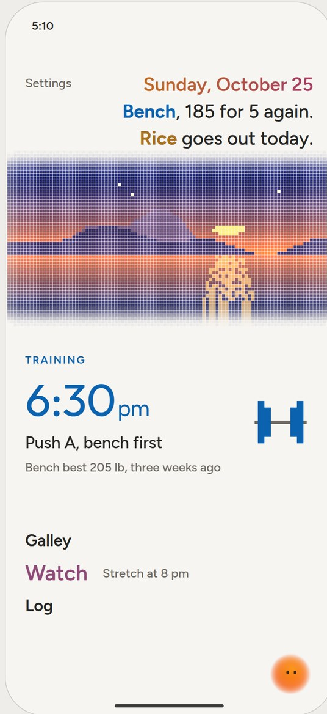
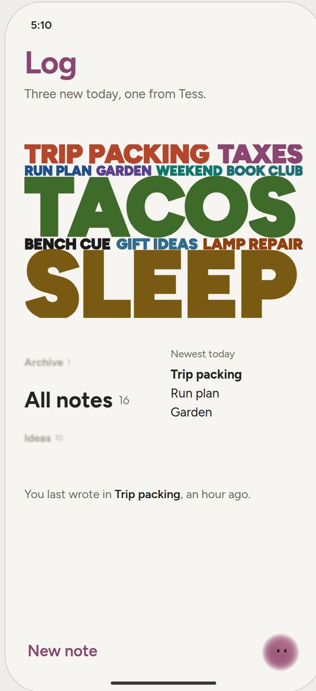
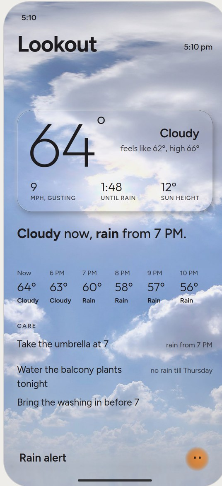
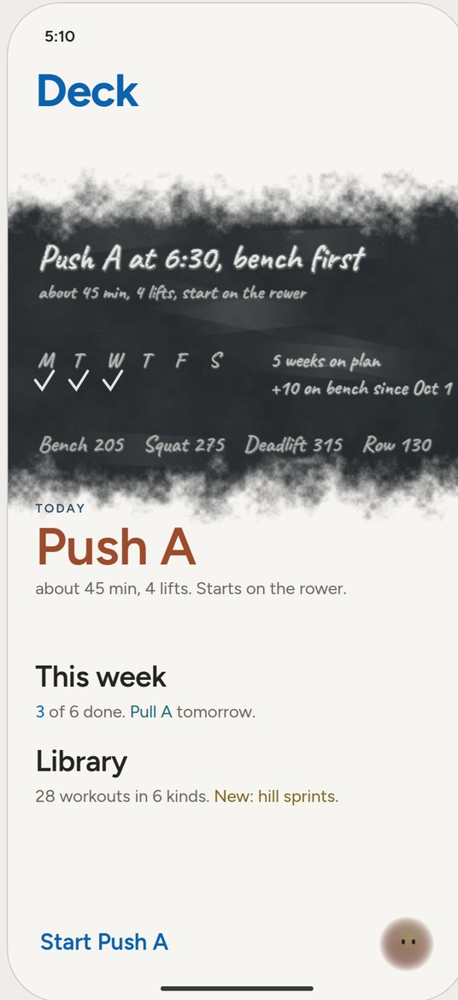
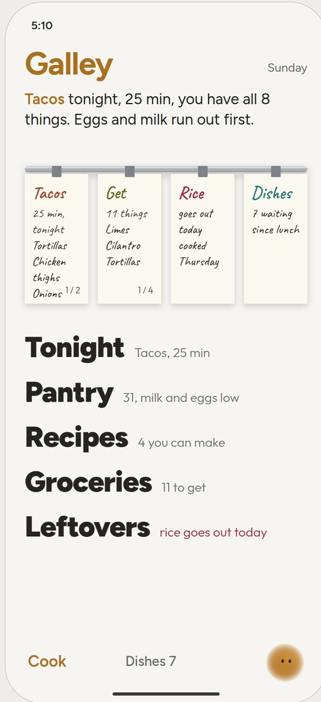
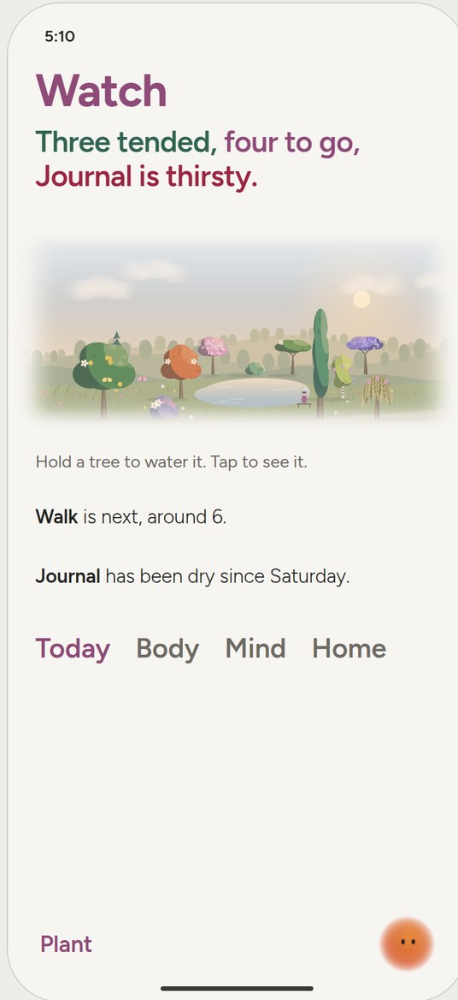
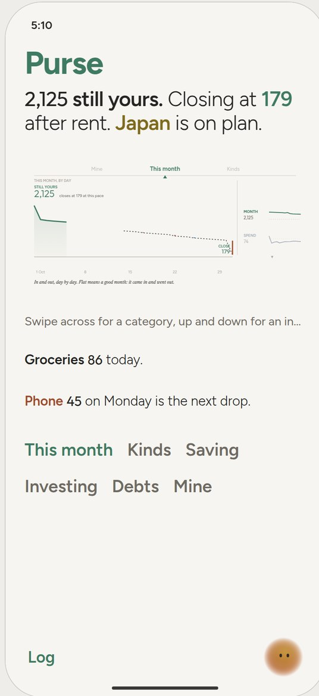

<title>Tessera Design</title>
<meta name="claude:viewport-fit-sides" content="cover">
<link rel="stylesheet" href="https://fonts.googleapis.com/css2?family=Figtree:wght@300;400;500;600;700&family=Outfit:wght@200;300;400&family=Newsreader:ital,wght@1,400&display=swap">
<style>
/* Layout: one page for the whole app. Header and the seven rooms as phones in a row (wrapping), each with its name, status, one line and links to its live board; then the rules, the money index system, how it is rendered, and every board. */
:root{--bg:#EFEDE9;--fg:#1D1B1F;--fg2:#5E5A62;--fg3:#8E8A92;--line:rgba(29,27,31,.14);--acc:#3F7A62;
 --bridge:#7E6A1E;--log:#5B3FB8;--lookout:#34506F;--deck:#0B62AE;--galley:#93611A;--watch:#8E4A78;--purse:#3F7A62;
 --sans:'Figtree',system-ui,sans-serif;--num:'Outfit','Figtree',system-ui,sans-serif;--serif:'Newsreader',Georgia,serif}
@media (prefers-color-scheme:dark){:root:not([data-theme="light"]){--bg:#121114;--fg:#F1EEE8;--fg2:#A9A4AE;--fg3:#77727C;--line:rgba(241,238,232,.16);--acc:#8DBFA7;
 --bridge:#D9C27A;--log:#B9A9E0;--lookout:#A7BCD6;--deck:#8FB0EE;--galley:#C49A5E;--watch:#D59AC4;--purse:#8DBFA7;color-scheme:dark}}
:root[data-theme="dark"]{--bg:#121114;--fg:#F1EEE8;--fg2:#A9A4AE;--fg3:#77727C;--line:rgba(241,238,232,.16);--acc:#8DBFA7;
 --bridge:#D9C27A;--log:#B9A9E0;--lookout:#A7BCD6;--deck:#8FB0EE;--galley:#C49A5E;--watch:#D59AC4;--purse:#8DBFA7;color-scheme:dark}
*{box-sizing:border-box}
body{background:var(--bg);color:var(--fg);font-family:var(--sans);font-size:16px;line-height:1.55;margin:0;padding-block:40px 96px;padding-left:max(16px,env(safe-area-inset-left,0px));padding-right:max(16px,env(safe-area-inset-right,0px))}
main{max-width:1240px;margin:0 auto;display:flex;flex-direction:column;gap:64px}
h1{font-family:var(--num);font-weight:200;font-size:clamp(40px,7vw,72px);line-height:1;margin:0;letter-spacing:-.01em;text-wrap:balance}
h2{font-size:12px;letter-spacing:.12em;text-transform:uppercase;font-weight:600;color:var(--fg2);margin:0 0 14px}
h3{font-size:22px;font-weight:700;margin:0;letter-spacing:-.01em}
p{margin:0 0 10px;max-width:68ch}
a{color:inherit;text-decoration-thickness:1px;text-underline-offset:3px}
.lede{font-size:19px;color:var(--fg2);max-width:62ch;margin-top:16px}
.meta{font-size:13px;color:var(--fg3);margin-top:10px}
.rooms{display:grid;grid-template-columns:repeat(auto-fill,minmax(min(100%,232px),1fr));gap:40px 28px}
.room{display:flex;flex-direction:column;gap:10px;min-width:0}
.room img{width:100%;height:auto;display:block;border-radius:22px;box-shadow:0 1px 0 var(--line),0 10px 30px rgba(0,0,0,.08)}
.room .was{font-size:13px;color:var(--fg3)}
.room .st{font-size:12px;letter-spacing:.08em;text-transform:uppercase;font-weight:600}
.room p{font-size:14px;color:var(--fg2);margin:0}
.room .go{font-size:14px;font-weight:600}
.rules{display:grid;grid-template-columns:repeat(auto-fit,minmax(min(100%,300px),1fr));gap:0 44px}
.rule{padding:14px 0;border-top:1px solid var(--line)}
.rule b{display:block;font-weight:600;margin-bottom:2px}
.rule span{color:var(--fg2);font-size:15px}
.wrap{overflow-x:auto}
table{border-collapse:collapse;font-size:14px;width:100%;min-width:640px}
th,td{text-align:left;padding:9px 12px 9px 0;border-top:1px solid var(--line);vertical-align:top}
th{font-size:11px;letter-spacing:.1em;text-transform:uppercase;color:var(--fg2);font-weight:600}
td b{font-weight:600}
.tess{font-family:var(--serif);font-style:italic;font-size:20px;color:var(--fg2)}
code{font-size:13px}
.cols{display:grid;grid-template-columns:repeat(auto-fit,minmax(min(100%,340px),1fr));gap:12px 48px}
.cols div{min-width:0}
.cols p{font-size:15px;color:var(--fg2)}
.cols b{color:var(--fg)}
</style>

<main>
<header>
<h2>Tessera · design · Oct 25, 2026</h2>
<h1>Seven rooms, one ship.</h1>
<p class="lede">Every room of the app with its centrepiece, linked to its live board. The rooms are named for a ship: you steer from the Bridge, write in the Log, check the Lookout, train on Deck, cook in the Galley, keep your Watch, and mind the Purse. Every centrepiece sits in the same slot and stays on every page of its room.</p>
<p class="meta">The full spec, with how to render all of it, is <code>docs/handoff/TESSERA-DESIGN.md</code> in the local clone. Nothing has been pushed.</p>
</header>

<section aria-label="Rooms">
<h2>The rooms</h2>
<div class="rooms">
 <div class="room"><div><h3 style="color:var(--bridge)">Bridge</h3><div class="was">was Home</div></div><div class="st" style="color:var(--bridge)">Approved</div><p>The mosaic: tiles, faces and weather words, with the one thing for today. Tessera is one tile of it.</p><a class="go" href="https://claude.ai/artifact/DygjFLo442RxyE1kmn4rJM" target="_blank" rel="noopener">Open the board →</a></div>
 <div class="room"><div><h3 style="color:var(--log)">Log</h3><div class="was">was Notes and Lists</div></div><div class="st" style="color:var(--log)">Approved · lists folded in</div><p>The word wall. Lists are notes you can check off; Shopping is shared with the Galley.</p><a class="go" href="https://claude.ai/artifact/1mSPKcxhvQB4pFU2tmQZkx" target="_blank" rel="noopener">Open the board →</a></div>
 <div class="room"><div><h3 style="color:var(--lookout)">Lookout</h3><div class="was">was Weather</div></div><div class="st" style="color:var(--lookout)">Surface approved · inside open</div><p>The skypiece: the whole page is a real sky, and the glass is raised by light and shadow only.</p><a class="go" href="https://claude.ai/artifact/XDNb4wm84nHNguDhFMqesr" target="_blank" rel="noopener">Open the board →</a></div>
 <div class="room"><div><h3 style="color:var(--deck)">Deck</h3><div class="was">was Training</div></div><div class="st" style="color:var(--deck)">Locked · chalk hand open</div><p>The blackboard: the page goes to slate and the plan is chalked on it. Write with a finger; swipe to wipe.</p><a class="go" href="https://claude.ai/artifact/RTMonbdXvyVWjQWnYcYXeP" target="_blank" rel="noopener">Open the board →</a></div>
 <div class="room"><div><h3 style="color:var(--galley)">Galley</h3><div class="was">was Kitchen</div></div><div class="st" style="color:var(--galley)">Decided · finishing gesture open</div><p>The pass: a rail of paper tickets, live to every page; tickets flip for more; cook mode runs the recipe.</p><a class="go" href="https://claude.ai/artifact/T1UHN2Rtak4TmZwbsfvHep" target="_blank" rel="noopener">Open the board →</a></div>
 <div class="room"><div><h3 style="color:var(--watch)">Watch</h3><div class="was">was Routines</div></div><div class="st" style="color:var(--watch)">Locked</div><p>The woodland: each routine is a tree. Hold to water it; buds are steps; missed days wilt; it grows with you.</p><a class="go" href="https://claude.ai/artifact/Pi96MVUEPMS2vvChk4vrDp" target="_blank" rel="noopener">Open the board →</a></div>
 <div class="room"><div><h3 style="color:var(--purse)">Purse</h3><div class="was">was Money</div></div><div class="st" style="color:var(--purse)">Locked</div><p>The indices: categories across the top, indices down the side, and the month as a stock chart between.</p><a class="go" href="https://claude.ai/artifact/MZjgtzedb9kp3ZGBvUQtcL" target="_blank" rel="noopener">Open the board →</a></div>
</div>
</section>

<section aria-label="Linked prototype">
<h2>Everything, clickable</h2>
<p style="font-size:17px">The linked prototype puts every screen on one phone with sample data: tap a face or a door to go in, swipe from the left edge to come back. It carries the ship names, and its Watch and Purse landings are the locked boards themselves (268 and 278, loaded in the phone), so it cannot drift from them. The pictures above are taken from it.</p>
<p><a class="go" href="https://claude.ai/artifact/1dH25PYRWRd3TU7LAacNHc" target="_blank" rel="noopener" style="font-weight:600">Open the prototype →</a></p>
</section>

<section aria-label="Rules">
<h2>Rules every room keeps</h2>
<div class="rules">
<div class="rule"><b>One slot</b><span>354 × 182 pt at the top of every landing. Content pages inside it; it never grows.</span></div>
<div class="rule"><b>The centrepiece stays</b><span>On every page of the room, live to whatever is below.</span></div>
<div class="rule"><b>Finish and function</b><span>A centrepiece earns its place by what it does, and it looks finished. No scenes that do nothing.</span></div>
<div class="rule"><b>Three to five seconds</b><span>Every reaction finishes inside five seconds. Reduce Motion: cross-fades.</span></div>
<div class="rule"><b>Colour means something</b><span>Three or four colours a page, each a role or a kind. No red or green for money, ever.</span></div>
<div class="rule"><b>Edges dissolve</b><span>A picture fades into the page through mist and a soft mask, never a frame.</span></div>
<div class="rule"><b>Glass by light and shadow</b><span>On a photographic ground: no refraction, frost or tint.</span></div>
<div class="rule"><b>Type</b><span>Figtree for words, Outfit for numbers, Newsreader italic for Tess. No cards, pills or gauges.</span></div>
</div>
</section>

<section aria-label="Purse indices">
<h2>The Purse, in one table</h2>
<p style="font-size:17px">An index is a saved question over your money: which transactions, over what time, compared to what. The built-ins and yours sit side by side, and each is drawn so it reads.</p>
<div class="wrap"><table>
<tr><th>Index</th><th>What it holds</th><th>Time</th><th>Flat means</th></tr>
<tr><td><b>MONTH</b></td><td>pay and every payment</td><td>this month, by day</td><td>in equals out</td></tr>
<tr><td><b>SPEND</b></td><td>everyday spending</td><td>this month vs last</td><td>your old pace (100)</td></tr>
<tr><td><b>FOOD, OUT…</b></td><td>one kind</td><td>twelve months</td><td>your own average</td></tr>
<tr><td><b>SURPRISES</b></td><td>unplanned one-offs</td><td>twelve months</td><td>your usual share of income</td></tr>
<tr><td><b>SAVE, NET</b></td><td>goals; everything you own</td><td>two to five years</td><td>on plan (100)</td></tr>
<tr><td><b>DEBTS</b></td><td>car, home, education, personal</td><td>two years</td><td>on schedule (100)</td></tr>
<tr><td><b>PORTFOLIO</b></td><td>holdings, live</td><td>thirty days</td><td>what you paid</td></tr>
<tr><td><b>INDIA</b></td><td>family, investments, the loan</td><td>twelve months</td><td>your average</td></tr>
</table></div>
</section>

<section aria-label="Tess">
<h2>Tess, on board</h2>
<p class="tess">"Lookout says rain by four." · "Watch: walk at six." · "The basil's been dry since Monday." · "Purse closes the month at 179." · "Three tickets on the Galley pass."</p>
</section>

<section aria-label="How it is built">
<h2>How the boards are made</h2>
<div class="cols">
<div><p><b>One file per board.</b> Plain HTML with an inline script and canvas; two phones (paper and black) and a large sandbox. No build step.</p><p><b>Shared state, per-canvas effects.</b> A tap changes the data once and every view plays the reaction.</p></div>
<div><p><b>Screenshots by headless Chromium.</b> URL parameters put any board into any state: <code>?hour=</code>, <code>?demo=</code>, <code>?ix=</code>, <code>?instant=</code>.</p><p><b>Checked before publishing.</b> Every script block is parsed by SpiderMonkey first; errors land in the board's status line.</p></div>
</div>
</section>

<section aria-label="Every board">
<h2>Every board</h2>
<div class="wrap"><table>
<tr><th>Board</th><th>Sheet</th><th>Link</th></tr>
<tr><td>Watch: the woodland</td><td>268</td><td><a href="https://claude.ai/artifact/Pi96MVUEPMS2vvChk4vrDp" target="_blank" rel="noopener">open</a></td></tr>
<tr><td>Purse: indices and the two scrollers</td><td>278</td><td><a href="https://claude.ai/artifact/MZjgtzedb9kp3ZGBvUQtcL" target="_blank" rel="noopener">open</a></td></tr>
<tr><td>Purse: you are the stock (the chart in full)</td><td>277</td><td><a href="https://claude.ai/artifact/FYcAr5BR2G5sMdajk5VUXS" target="_blank" rel="noopener">open</a></td></tr>
<tr><td>Purse: charge (liked; inner page or widget)</td><td>276</td><td><a href="https://claude.ai/artifact/4QZCy1jFFNeLvA9JnQrQeY" target="_blank" rel="noopener">open</a></td></tr>
<tr><td>Galley: the pass</td><td>259</td><td><a href="https://claude.ai/artifact/T1UHN2Rtak4TmZwbsfvHep" target="_blank" rel="noopener">open</a></td></tr>
<tr><td>Deck: the blackboard</td><td>258</td><td><a href="https://claude.ai/artifact/RTMonbdXvyVWjQWnYcYXeP" target="_blank" rel="noopener">open</a></td></tr>
<tr><td>Lookout: inside the glass</td><td>255</td><td><a href="https://claude.ai/artifact/XDNb4wm84nHNguDhFMqesr" target="_blank" rel="noopener">open</a></td></tr>
<tr><td>Lookout: the glass surface</td><td>254</td><td><a href="https://claude.ai/artifact/TQ2mH5kFqJqXZs7jMEoXts" target="_blank" rel="noopener">open</a></td></tr>
<tr><td>Log: the word wall</td><td>246</td><td><a href="https://claude.ai/artifact/1mSPKcxhvQB4pFU2tmQZkx" target="_blank" rel="noopener">open</a></td></tr>
<tr><td>Bridge: the mosaic</td><td>236</td><td><a href="https://claude.ai/artifact/DygjFLo442RxyE1kmn4rJM" target="_blank" rel="noopener">open</a></td></tr>
<tr><td>Linked prototype</td><td>—</td><td><a href="https://claude.ai/artifact/1dH25PYRWRd3TU7LAacNHc" target="_blank" rel="noopener">open</a></td></tr>
</table></div>
</section>

<section aria-label="Open">
<h2>Still open</h2>
<div class="rules">
<div class="rule"><b>Lookout</b><span>What lives inside the glass; the rest of the page; night and storm skies.</span></div>
<div class="rule"><b>Galley</b><span>The gesture that finishes a ticket (hold and tear recommended).</span></div>
<div class="rule"><b>Deck</b><span>The chalk hand; colours by split.</span></div>
<div class="rule"><b>Purse</b><span>Which indices ship first; the "unplanned" flag; live data.</span></div>
<div class="rule"><b>Names</b><span>Put the ship names on every screen as each room is built.</span></div>
</div>
</section>
</main>
